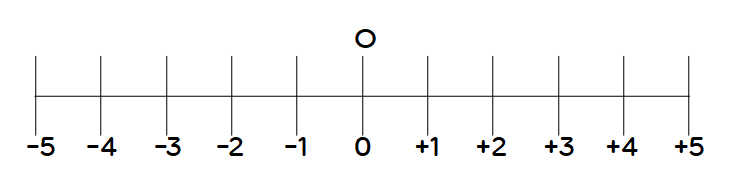
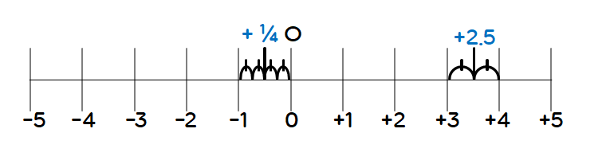

수직선 위에 수를 나타내는 방법
직선 위에 기준이 되는 점 O를 잡아 그 점에 정수 0을 대응시키고, 점 O의 좌우에 일정한 간격으로 점을 잡아 오른쪽에 양의 정수를, 왼쪽에 음의 정수를 차례로 대응시킬 수 있다. 이처럼 수를 대응시켜 만든 직선을
수직선
이라고 한다. 이때 기준이 되는 점 O를 원점이라고 한다.

정수와 마찬가지로 유리수도 수직선 위에 나타낼 수 있다.
